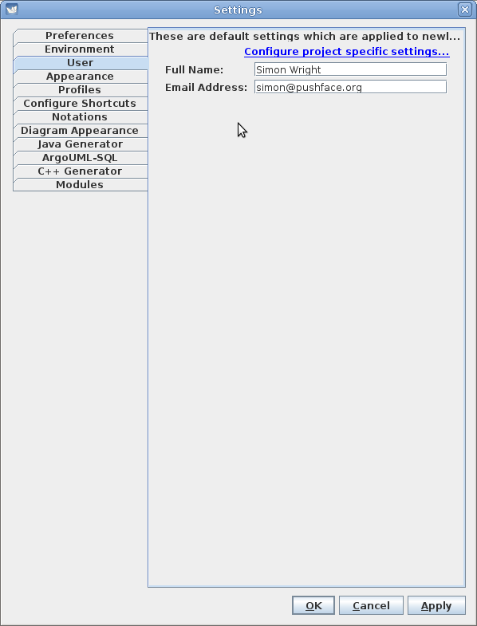
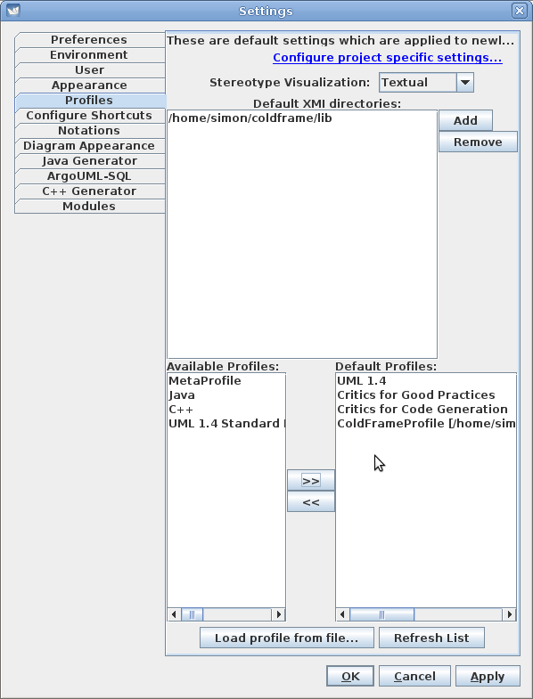
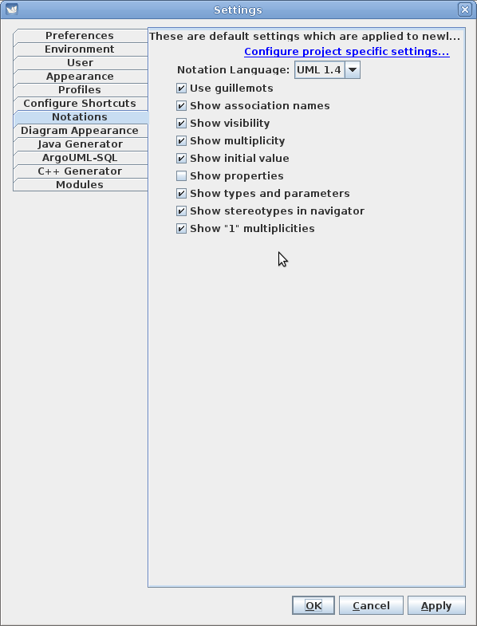
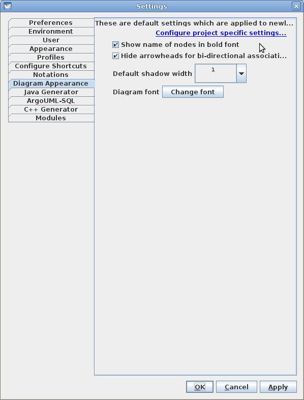
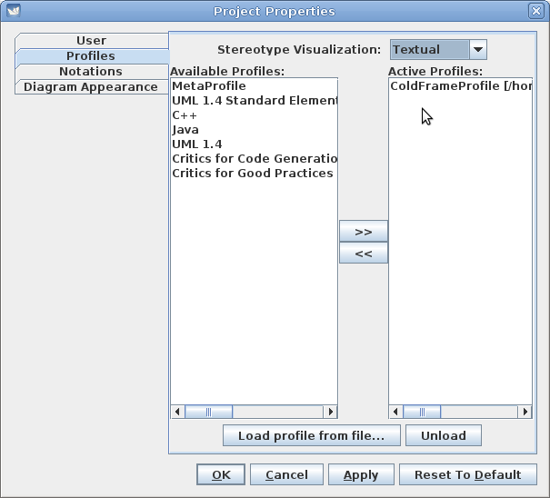

On Linux and (probably) Windows, you can set up ColdFrame-specific and ColdFrame-recommended defaults in the Edit/Settings menu. On Mac OS X, use Main > Preferences.
You can set your name and contact details in the User tab:

In the Profiles tab, you need to tell ArgoUML where to find ColdFrame's profile (the top half of the screenshot). You'll probably want something more like /where/ever/cf-20121225/lib. Then, in the lower half, click on Refresh List to include ColdFrameProfile.xmi in the Available Profiles and then on the >> to include it in the Default Profiles.

Adjust the Notations settings to suit.

In the Diagram Appearance tab, you may like to show node names in a bold font.

It's best if you remove all but ColdFrameProfile from the Active Profiles list.
